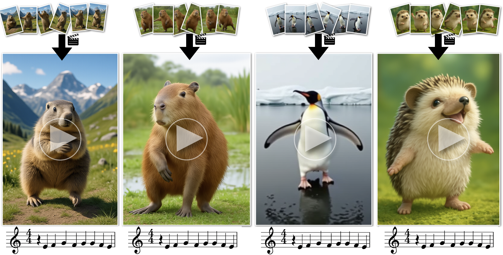

How Animals Dance
(When You're Not Looking)
Xiaojuan Wang
1
Aleksander Holynski
2
Brian Curless
1
Ira Kemelmacher
1
Steve Seitz
1
1
University of Washington
2
UC Berkeley
arXiv
Results

TL;DR:
Starting from a small set of generated keyframes, \eg, a marmot in various poses, our method generates an animal dance video that follows a specified choreography pattern, extracted from a reference dance video.
Doing the same dance
Your browser does not support the video tag.
Everyone has a unique dance
More examples
Your browser does not support the video tag.
More examples
Your browser does not support the video tag.
More examples
Your browser does not support the video tag.